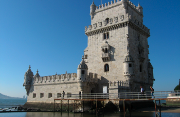

A Brief History
Lisbon’s history dates back to 300,000 years ago. However, it emerged as a nation state in the early 12th century and ranks as one of the world's longest founded cities. As the legend tells, it is a city founded and named by Ulysses as Ulissipo or Olissopo, which has its origins in the Phoenician words "Allis Ubbo", meaning "enchanting port".
The 15th century was the point of departure for the Portuguese Discoveries, an era during which Portugal enjoyed abundant wealth and prosperity through its newly discovered off shore colonies in Atlantic islands, the shores of Africa, the Americas and Asia. Vasco da Gama's famous discovery of the sea route to India marked this century. Lisbon was then world's most prosperous trading centre. Furthermore, many attractions of the city at present such as Mosteiro dos Jerónimos and Torre de Belém, both classified by UNESCO as World Heritage Sites, were built during this period.
However, this era didn’t take long: the earthquake of 1755 destroyed nearly entire city. The city was rebuilt by the Marquês de Pombal, who thus created the Baixa Pombalina, a commercial area that still attains attraction. In the 19th and 20th centuries, the city spread progressively to the North and areas such as the Avenidas Novas (New Avenues) were added.
Work of Paul Truong Nguyen for CS545 Fall 2016. All images and text were taken from other websites as this was a class assignment, solely used for educational purposes only.